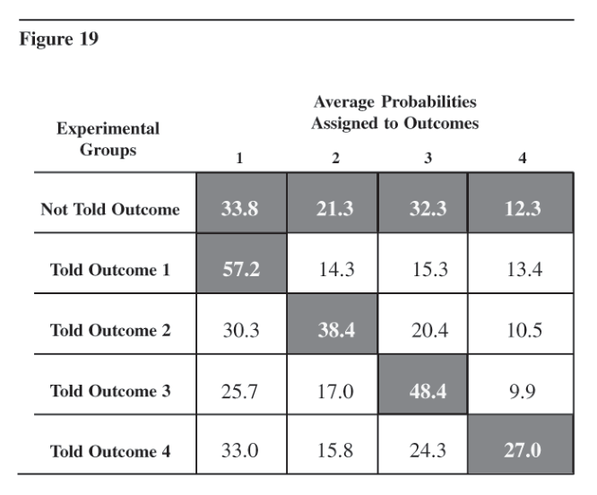

Chapter 13 Hindsight Biases in Evaluation of Intelligence Reporting
Evaluations of intelligence analysis—analysts’ own evaluations of their judgments as well as others’ evaluations of intelligence products—are distorted by systematic biases. As a result, analysts overestimate the quality of their analytical performance, and others underestimate the value and quality of their efforts. These biases are not simply the product of self-interest and lack of objectivity. They stem from the nature of human mental processes and are difficult and perhaps impossible to overcome.150
* * * * * * * * * * * * * * * * * * *
Hindsight biases influence the evaluation of intelligence reporting in three ways:
None of the biases is surprising. Analysts have observed these tendencies in others, although probably not in themselves. What may be unexpected is that these biases are not only the product of self-interest and lack of objectivity. They are examples of a broader phenomenon that is built into human mental processes and that cannot be overcome by the simple admonition to be more objective.
这些偏差不仅仅是自身利益和缺乏客观性的产物。它们是一种更广泛现象的例证，这种现象内置于人类心理过程之中，无法通过“更客观一些”这样简单的告诫来克服。
Psychologists who conducted the experiments described below tried to teach test subjects to overcome these biases. Experimental subjects with no vested interest in the results were briefed on the biases and encouraged to avoid them or compensate for them, but could not do so. Like optical illusions, cognitive biases remain compelling even after we become aware of them.
The analyst, consumer, and overseer evaluating analytical performance all have one thing in common. They are exercising hindsight. They take their current state of knowledge and compare it with what they or others did or could or should have known before the current knowledge was received. This is in sharp contrast with intelligence estimation, which is an exercise in foresight, and it is the difference between these two modes of thought—hindsight and foresight—that seems to be a source of bias.
The amount of good information that is available obviously is greater in hindsight than in foresight. There are several possible explanations of how this affects mental processes. One is that the additional information available for hindsight changes perceptions of a situation so naturally and so immediately that people are largely unaware of the change. When new information is received, it is immediately and unconsciously assimilated into our pre-existing knowledge. If this new information adds significantly to our knowledge—that is, if it tells the outcome of a situation or the answer to a question about which we were previously uncertain—our mental images are restructured to take the new information into account. With the benefit of hindsight, for example, factors previously considered relevant may become irrelevant, and factors previously thought to have little relevance may be seen as determinative.
After a view has been restructured to assimilate the new information, there is virtually no way to accurately reconstruct the pre-existing mental set. Once the bell has rung, it cannot be unrung. A person may remember his or her previous judgments if not much time has elapsed and the judgments were precisely articulated, but apparently people cannot accurately reconstruct their previous thinking. The effort to reconstruct what we previously thought about a given situation, or what we would have thought about it, is inevitably influenced by our current thought patterns. Knowing the outcome of a situation makes it harder to imagine other outcomes that might have been considered. Unfortunately, simply understanding that the mind works in this fashion does little to help overcome the limitation.
The overall message to be learned from an understanding of these biases, as shown in the experiments described below, is that an analyst’s intelligence judgments are not as good as analysts think they are, or as bad as others seem to believe. Because the biases generally cannot be overcome, they would appear to be facts of life that analysts need to take into account in evaluating their own performance and in determining what evaluations to expect from others. This suggests the need for a more systematic effort to:
The discussion now turns to the experimental evidence demonstrating these biases from the perspective of the analyst, consumer, and overseer of intelligence.
The Analyst’s Perspective
Analysts interested in improving their own performance need to evaluate their past estimates in the light of subsequent developments. To do this, analysts must either remember (or be able to refer to) their past estimates or must reconstruct their past estimates on the basis of what they remember having known about the situation at the time the estimates were made. The effectiveness of the evaluation process, and of the learning process to which it gives impetus, depends in part upon the accuracy of these remembered or reconstructed estimates.
Experimental evidence suggests a systematic tendency toward faulty memory of past estimates.151 That is, when events occur, people tend to overestimate the extent to which they had previously expected them to occur. And conversely, when events do not occur, people tend to underestimate the probability they had previously assigned to their occurrence. In short, events generally seem less surprising than they should on the basis of past estimates. This experimental evidence accords with analysts’ intuitive experience. Analysts rarely appear—or allow themselves to appear—very surprised by the course of events they are following.
In experiments to test the bias in memory of past estimates, 119 subjects were asked to estimate the probability that a number of events would or would not occur during President Nixon’s trips to Peking and Moscow in 1972. Fifteen possible outcomes were identified for each trip, and each subject assigned a probability to each of these outcomes. The outcomes were selected to cover the range of possible developments and to elicit a wide range of probability values.
At varying time periods after the trips, the same subjects were asked to remember or reconstruct their own predictions as accurately as possible. (No mention was made of the memory task at the time of the original prediction.) Then the subjects were asked to indicate whether they thought each event had or had not occurred during these trips.
When three to six months were allowed to elapse between the subjects’ estimates and their recollection of these estimates, 84 percent of the subjects exhibited the bias when dealing with events they believed actually did happen. That is, the probabilities they remembered having estimated were higher than their actual estimates of events they believed actually did occur. Similarly, for events they believed did not occur, the probabilities they remembered having estimated were lower than their actual estimates, although here the bias was not as great. For both kinds of events, the bias was more pronounced after three to six months had elapsed than when subjects were asked to recall estimates they had given only two weeks earlier.
In summary, knowledge of the outcomes somehow affected most test subjects’ memory of their previous estimates of these outcomes, and the more time that was allowed for memories to fade, the greater the effect of the bias. The developments during the President’s trips were perceived as less surprising than they would have been if actual estimates were compared with actual outcomes. For the 84 percent of subjects who showed the anticipated bias, their retrospective evaluation of their estimative performance was clearly more favorable than warranted by the facts.
The Consumer’s Perspective
When consumers of intelligence reports evaluate the quality of the intelligence product, they ask themselves the question: “How much did I learn from these reports that I did not already know?” In answering this question, there is a consistent tendency for most people to underestimate the contribution made by new information. This “I knew it all along” bias causes consumers to undervalue the intelligence product.152
That people do in fact commonly react to new information in this manner was tested in a series of experiments involving some 320 people, each of whom answered the same set of 75 factual questions taken from almanacs and encyclopedias. As a measure of their confidence in their answers, the subjects assigned to each question a number ranging from 50 percent to 100 percent, indicating their estimate of the probability that they had chosen the correct answer.
As a second step in the experiment, subjects were divided into three groups. The first group was given 25 of the previously asked questions and instructed to respond to them exactly as they had previously. This simply tested the subjects’ ability to remember their previous answers. The second group was given the same set of 25 questions but with the correct answers circled “for your [the subjects’] general information.” They, too, were asked to respond by reproducing their previous answers. This tested the extent to which learning the correct answers distorted the subjects’ memories of their own previous answers, thus measuring the same bias in recollection of previous estimates that was discussed above from the analyst’s perspective.
The third group was given a different set of 25 questions they had not previously seen, but which were of similar difficulty so that results would be comparable with the other two groups. The correct answers were marked on the questionnaire, and the subjects were asked to respond to the questions as they would have responded had they not been told the answer. This tested their ability to recall accurately how much they had known before they learned the correct answer. The situation is comparable to that of intelligence consumers who are asked to evaluate how much they learned from a report, and who can do this only by trying to recollect the extent of their knowledge before they read the report.
The most significant results came from this third group of subjects. The group clearly overestimated what they had known originally and underestimated how much they learned from having been told the answer. For 19 of 25 items in one running of the experiment and 20 of 25 items in another running, this group assigned higher probabilities to the correct alternatives than it is reasonable to expect they would have assigned had they not already known the correct answers.
In summary, the experiment confirmed the results of the previous experiment showing that people exposed to an answer tend to remember having known more than they actually did. It also demonstrates that people have an even greater tendency to exaggerate the likelihood that they would have known the correct answer if they had not been informed of it. In other words, people tend to underestimate both how much they learn from new information and the extent to which new information permits them to make correct judgments with greater confidence. To the extent that intelligence consumers manifest these same biases, they will tend to underrate the value to them of intelligence reporting.
The Overseer’s Perspective
An overseer, as the term is used here, is one who investigates intelligence performance by conducting apostmortemexamination of a high-profile intelligence failure. Such investigations are carried out by Congress, the Intelligence Community staff, and CIA or DI management. For those outside the executive branch who do not regularly read the intelligence product, this sort of retrospective evaluation of known intelligence failures is a principal basis for judgments about the quality of intelligence analysis.
A fundamental question posed in anypostmorteminvestigation of intelligence failure is this: Given the information that was available at the time, should analysts have been able to foresee what was going to happen? Unbiased evaluation of intelligence performance depends upon the ability to provide an unbiased answer to this question.153
Unfortunately, once an event has occurred, it is impossible to erase from our mind the knowledge of that event and reconstruct what our thought processes would have been at an earlier point in time. In reconstructing the past, there is a tendency toward determinism, toward thinking that what occurred was inevitable under the circumstances and therefore predictable. In short, there is a tendency to believe analysts should have foreseen events that were, in fact, unforeseeable on the basis of the information available at the time.
The experiments reported in the following paragraphs tested the hypotheses that knowledge of an outcome increases the perceived inevitability of that outcome, and that people who are informed of the outcome are largely unaware that this information has changed their perceptions in this manner.
A series of sub-experiments used brief (150-word) summaries of several events for which four possible outcomes were identified. One of these events was the struggle between the British and the Gurkhas in India in 1814. The four possible outcomes for this event were 1) British victory, 2) Gurkha victory, 3) military stalemate with no peace settlement, and 4) military stalemate with a peace settlement. Five groups of 20 subjects each participated in each sub-experiment. One group received the 150word description of the struggle between the British and the Gurkhas with no indication of the outcome. The other four groups received the identical description but with one sentence added to indicate the outcome of the struggle—a different outcome for each group.
The subjects in all five groups were asked to estimate the likelihood of each of the four possible outcomes and to evaluate the relevance to their judgment of each datum in the event description. Those subjects who were informed of an outcome were placed in the same position as an overseer of intelligence analysis preparing a postmortem analysis of an intelligence failure. This person tries to assess the probability of an outcome based only on the information available before the outcome was known. The results are shown in Figure 18.

The group not informed of any outcome judged the probability of Outcome 1 as 33.8 percent, while the group told that Outcome 1 was the actual outcome perceived the probability of this outcome as 57.2 percent. The estimated probability was clearly influenced by knowledge of the outcome. Similarly, the control group with no outcome knowledge estimated the probability of Outcome 2 as 21.3 percent, while those informed that Outcome 2 was the actual outcome perceived it as having a 38.4 percent probability.
An average of all estimated outcomes in six sub-experiments (a total of 2,188 estimates by 547 subjects) indicates that the knowledge or belief that one of four possible outcomes has occurred approximately doubles the perceived probability of that outcome as judged with hindsight as compared with foresight.
The relevance that subjects attributed to any datum was also strongly influenced by which outcome, if any, they had been told was true. As Roberta Wohlstetter has written, “It is much easier after the fact to sort the relevant from the irrelevant signals. After the event, of course, a signal is always crystal clear. We can now see what disaster it was signaling since the disaster has occurred, but before the event it is obscure and pregnant with conflicting meanings.”154 The fact that outcome knowledge automatically restructures a person’s judgments about the relevance of available data is probably one reason it is so difficult to reconstruct how our thought processes were or would have been without this outcome knowledge.
In several variations of this experiment, subjects were asked to respond as though they did not know the outcome, or as others would respond if they did not know the outcome. The results were little different, indicating that subjects were largely unaware of how knowledge of the outcome affected their own perceptions. The experiment showed that subjects were unable to empathize with how others would judge these situations. Estimates of how others would interpret the data without knowing the outcome were virtually the same as the test subjects’ own retrospective interpretations.
These results indicate that overseers conducting postmortemevaluations of what analysts should have been able to foresee, given the available information, will tend to perceive the outcome of that situation as having been more predictable than was, in fact, the case. Because they are unable to reconstruct a state of mind that views the situation only with foresight, not hindsight, overseers will tend to be more critical of intelligence performance than is warranted.
Discussion of Experiments
Experiments that demonstrated these biases and their resistance to corrective action were conducted as part of a research program in decision analysis funded by the Defense Advanced Research Projects Agency. Unfortunately, the experimental subjects were students, not members of the Intelligence Community. There is, nonetheless, reason to believe the results can be generalized to apply to the Intelligence Community. The experiments deal with basic human mental processes, and the results do seem consistent with personal experience in the Intelligence Community. In similar kinds of psychological tests, in which experts, including intelligence analysts, were used as test subjects, the experts showed the same pattern of responses as students.
My own imperfect effort to replicate one of these experiments using intelligence analysts also supports the validity of the previous findings. To test the assertion that intelligence analysts normally overestimate the accuracy of their past judgments, there are two necessary preconditions. First, analysts must make a series of estimates in quantitative terms—that is, they must say not just that a given occurrence is probable, but that there is, for example, a 75-percent chance of its occurrence. Second, it must be possible to make an unambiguous determination whether the estimated event did or did not occur. When these two preconditions are present, one can go back and check the analysts’ recollections of their earlier estimates. Because CIA estimates are rarely stated in terms of quantitative probabilities, and because the occurrence of an estimated event within a specified time period often cannot be determined unambiguously, these preconditions are seldom met.
I did, however, identify several analysts who, on two widely differing subjects, had made quantitative estimates of the likelihood of events for which the subsequent outcome was clearly known. I went to these analysts and asked them to recall their earlier estimates. The conditions for this mini-experiment were far from ideal and the results were not clear-cut, but they did tend to support the conclusions drawn from the more extensive and systematic experiments described above.
All this leads to the conclusion that the three biases are found in Intelligence Community personnel as well as in the specific test subjects. In fact, one would expect the biases to be even greater in foreign affairs professionals whose careers and self-esteem depend upon the presumed accuracy of their judgments.
Can We Overcome These Biases?
Analysts tend to blame biased evaluations of intelligence performance at best on ignorance and at worst on self-interest and lack of objectivity. Both these factors may also be at work, but the experiments suggest the nature of human mental processes is also a principal culprit. This is a more intractable cause than either ignorance or lack of objectivity.
The self-interest of the experimental subjects was not at stake, yet they showed the same kinds of bias with which analysts are familiar. Moreover, in these experimental situations the biases were highly resistant to efforts to overcome them. Subjects were instructed to make estimates as if they did not already know the answer, but they were unable to do so. One set of test subjects was briefed specifically on the bias, citing the results of previous experiments. This group was instructed to try to compensate for the bias, but it was unable to do so. Despite maximum information and the best of intentions, the bias persisted.
This intractability suggests the bias does indeed have its roots in the nature of our mental processes. Analysts who try to recall a previous estimate after learning the actual outcome of events, consumers who think about how much a report has added to their knowledge, and overseers who judge whether analysts should have been able to avoid an intelligence failure, all have one thing in common. They are engaged in a mental process involving hindsight. They are trying to erase the impact of knowledge, so as to remember, reconstruct, or imagine the uncertainties they had or would have had about a subject prior to receipt of more or less definitive information.
It appears, however, that the receipt of what is accepted as definitive or authoritative information causes an immediate but unconscious restructuring of a person’s mental images to make them consistent with the new information. Once past perceptions have been restructured, it seems very difficult, if not impossible, to reconstruct accurately what one’s thought processes were or would have been before this restructuring.
There is one procedure that may help to overcome these biases. It is to pose such questions as the following: Analysts should ask themselves, “If the opposite outcome had occurred, would I have been surprised?” Consumers should ask, “If this report had told me the opposite, would I have believed it?” And overseers should ask, “If the opposite outcome had occurred, would it have been predictable given the information that was available?” These questions may help one recall or reconstruct the uncertainty that existed prior to learning the content of a report or the outcome of a situation.
This method of overcoming the bias can be tested by readers of this chapter, especially those who believe it failed to tell them much they had not already known. If this chapter had reported that psychological experiments show no consistent pattern of analysts overestimating the accuracy of their estimates, or of consumers underestimating the value of our product, would you have believed it? (Answer: Probably not.) If it had reported that psychological experiments show these biases to be caused only by self-interest and lack of objectivity, would you have believed this? (Answer: Probably yes.) And would you have believed it if this chapter had reported these biases can be overcome by a conscientious effort at objective evaluation? (Answer: Probably yes.)
These questions may lead you, the reader, to recall the state of your knowledge or beliefs before reading this chapter. If so, the questions will highlight what you learned here—namely, that significant biases in the evaluation of intelligence estimates are attributable to the nature of human mental processes, not just to self-interest and lack of objectivity, and that they are, therefore, exceedingly difficult to overcome.